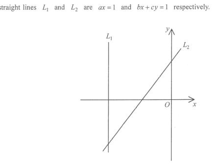

HKDSE Mathematics (Compulsory Part) · Paper 2
Coordinate Geometry — Straight lines, intercepts & signs of unknowns
Full question text with marks.
In the figure, the equations of the straight lines \(L_1\) and \(L_2\) are \[ ax = 1 \qquad\text{and}\qquad bx + cy = 1 \] respectively. Which of the following are true?
From the figure: \(L_1\) is vertical, to the left of the \(y\)-axis. \(L_2\) has a negative \(x\)-intercept (smaller than that of \(L_1\)) and a positive \(y\)-intercept, with a positive slope.

Show that \(a < 0\) (Statement I is true).
For the line \(L_1:\; ax = 1\), solve for \(x\):
\[ x = \frac{1}{a} \]From the figure, \(L_1\) lies to the left of the \(y\)-axis, so its \(x\)-intercept is negative:
\[ \frac{1}{a} < 0 \]Show that \(a > b\) so that Statement II (\(a < b\)) is false.
For \(L_2:\; bx+cy=1\), set \(y=0\) to find its \(x\)-intercept:
\[ bx = 1 \;\Rightarrow\; x = \frac{1}{b} \]From the figure, the \(x\)-intercept of \(L_1\) is smaller than that of \(L_2\) (i.e. \(L_1\) is further left):
\[ \frac{1}{a} < \frac{1}{b} \]Since \(a<0\) and \(b<0\), the product \(ab > 0\). Multiplying the inequality by the positive number \(ab\) preserves the direction:
\[ \frac{1}{a}\cdot ab < \frac{1}{b}\cdot ab \] \[ b < a \]Show that \(c > 0\) so that Statement III is true.
For \(L_2:\; bx+cy=1\), set \(x=0\) to find its \(y\)-intercept:
\[ cy = 1 \;\Rightarrow\; y = \frac{1}{c} \]From the figure, \(L_2\) cuts the \(y\)-axis above the origin, so its \(y\)-intercept is positive:
\[ \frac{1}{c} > 0 \;\Rightarrow\; c > 0 \]